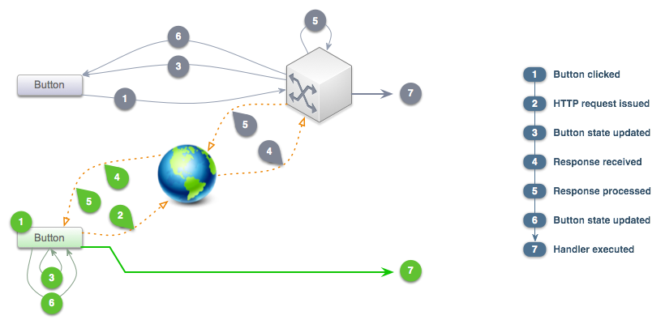

Self-Controlling Basics
Self-Controlling Basics CIRequestable
CIRequestable Extra Credit
Extra CreditControl Yourself
One of CIP’s guiding pricinciples is self-control.
Self-controlling components and objects are able to request their own
data, process it, present it, and handle interactions with it. Self-controlling
components are helpful because they are drop-in replacements for less-capable
components and even entire systems. For instance, the CIButton component is
able to make GET, PUT, POST, and
DELETE requests, render itself, re-render itself differently while
requesting, and delegate the response when the requesting is finished. In
other frameworks, this process might require an object to request the data,
an object to format incoming or outgoing data, an object to encapsulate an
error, the button itself, and a controller object or function to handle the
logistics of requesting, changing states, updating the button, and handling
a response.

Self-controlling components use a variety of techniques, mainly mixins and
delegation. Mixins are encapsulated methods that can be added to
existing classes on-the-fly. In CIP, mixins are used to “bundle up”
reusable functionality without subclassing, similar to Java’s interfaces,
Ruby’s modules and Objective-C’s categories. The mixin
to give components the ability to make requests is CIRequestable,
which we’ll explore in the next section.
Delegation is a design pattern whereby one object relinquishes
decisions to another. An object can support more uses
and scenarios by delegating the responsibility of implementation to another
object or function. We have already seen one example of delegation in CIP —
CIRect delegates measurement logic to its view. The view is free
to provide a Number or a CIResizeBehavior, which can delegate
the responsibility of measurement to yet another view. In our self-controlling button example,
the button relies on a CIRequest object to handle the requesting,
but that request object delegates responsibility for handling the request to the calling
parent via its callback methods.